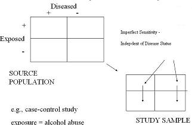
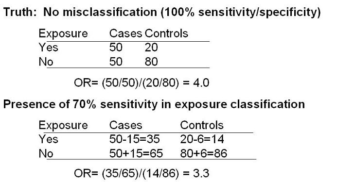

Example of Misclassification Bias
Non-Differential Exposure - Imperfect Sensitivity
Lead Author(s): Jeff Martin, MD
Measurement bias is affected by imperfect sensitivity of exposure variables.
Imperfect Sensitivity of Exposure Variables

In the diagram above the source population is on the top left and our study sample is on the bottom right.
- We use our study sample to make inferences about the source population.
Study - Alcohol Abuse
Consider as an example of a case-control study of some disease and the exposure under study is alcohol abuse.
- Let's consider that among all true alcohol abusers our measurement, which is self-report, is only able to identify some fraction.
- In other words, we aren't able to get some alcohol abusers to admit that they are abusers.
- Hence, our measurement of alcohol use is insensitive. We depict this by showing an arrow going from the exposure cell to the unexposed cell.
- This is lack of complete sensitivity; in other words, we are misclassifying some alcohol users as non-users.
Misclassification of Exposure
- This is called misclassification of exposure.
- Because the misclassification of exposure is occurring equally among the cases and controls, we call this non-differential with respect to disease.
Non-Differential Misclassification of Exposure
- Overall, this is called non-differential misclassification of exposure.
Again, some truly exposed persons are misclassified as unexposed.
- Because this happens equally among diseased and non-diseased persons, it is called non-differential misclassification.
Imperfect Sensitivity - Bias the OR towards the Null Hypothesis

In the top panel above is the truth where there is no misclassification of exposure -
What happens in the presence of 70% sensitivity in exposure classification?
- That means that 30% of truly exposed cases or 15 of 50 are instead classified as unexposed.
- Also, 30% of the 20 exposed controls are falsely classified as unexposed, or 6 persons.
- The bottom panel therefore shows what happens and you can see that the OR is now attenuated to 3.3.
Bias Towards the Null Hypothesis
This illustrates the effect of non-differential misclassification of exposure in the presence of 2 exposure categories -